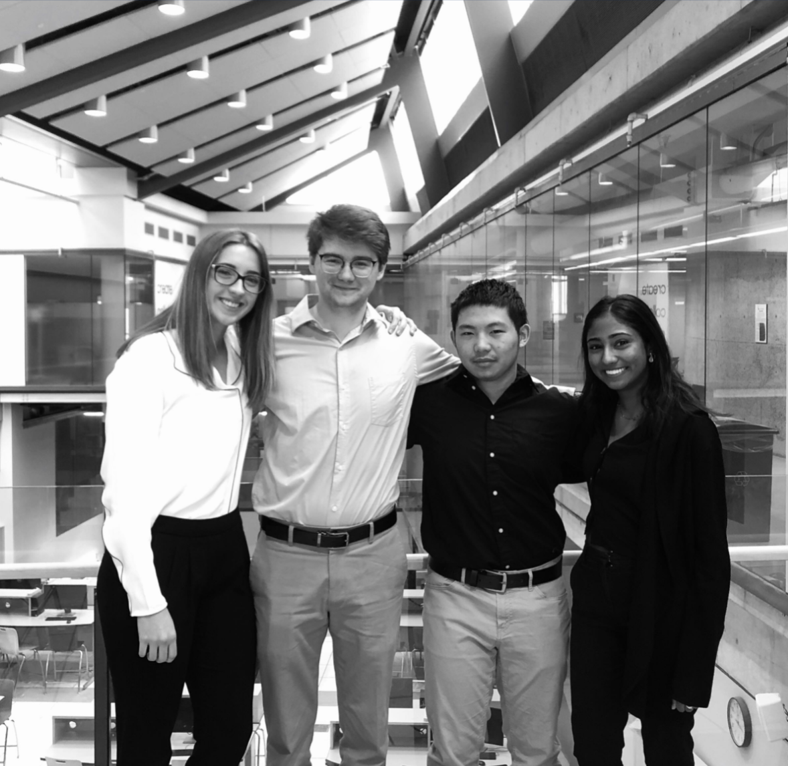
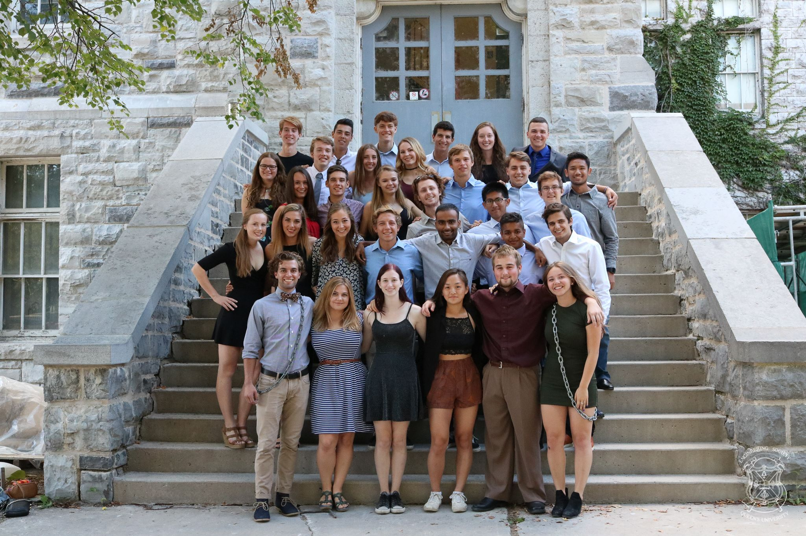
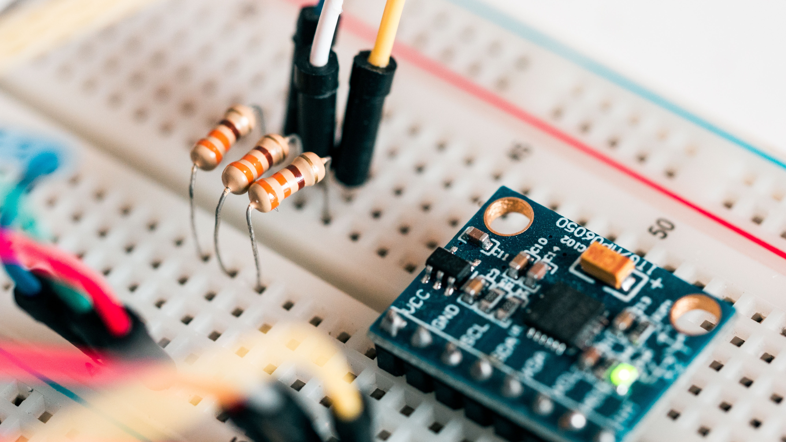
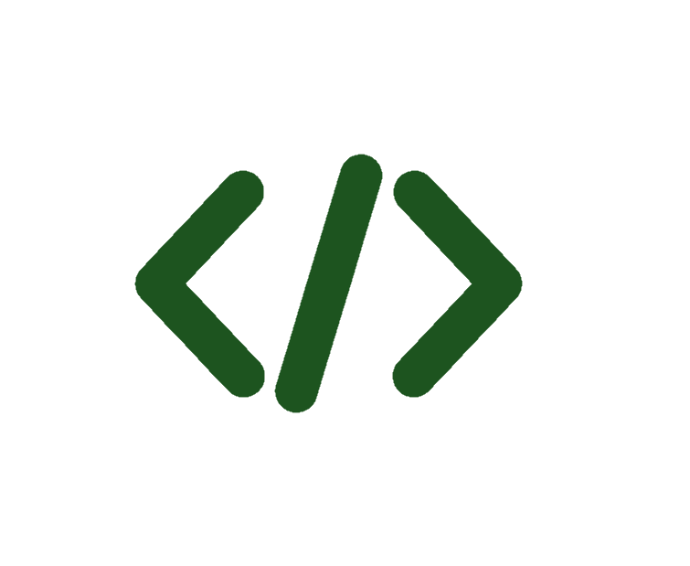
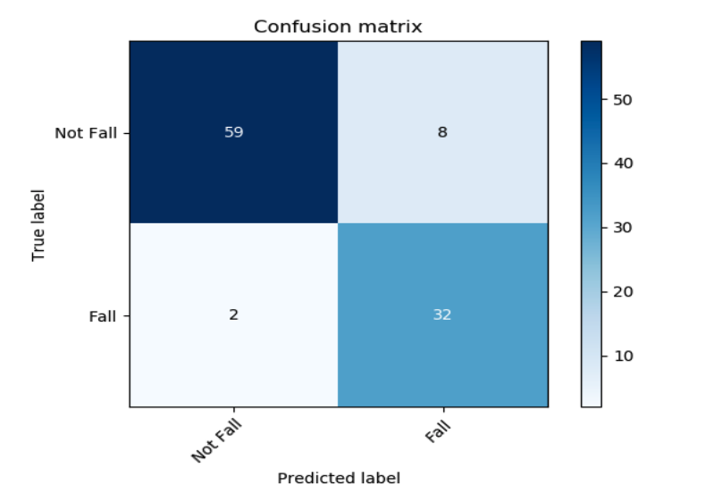
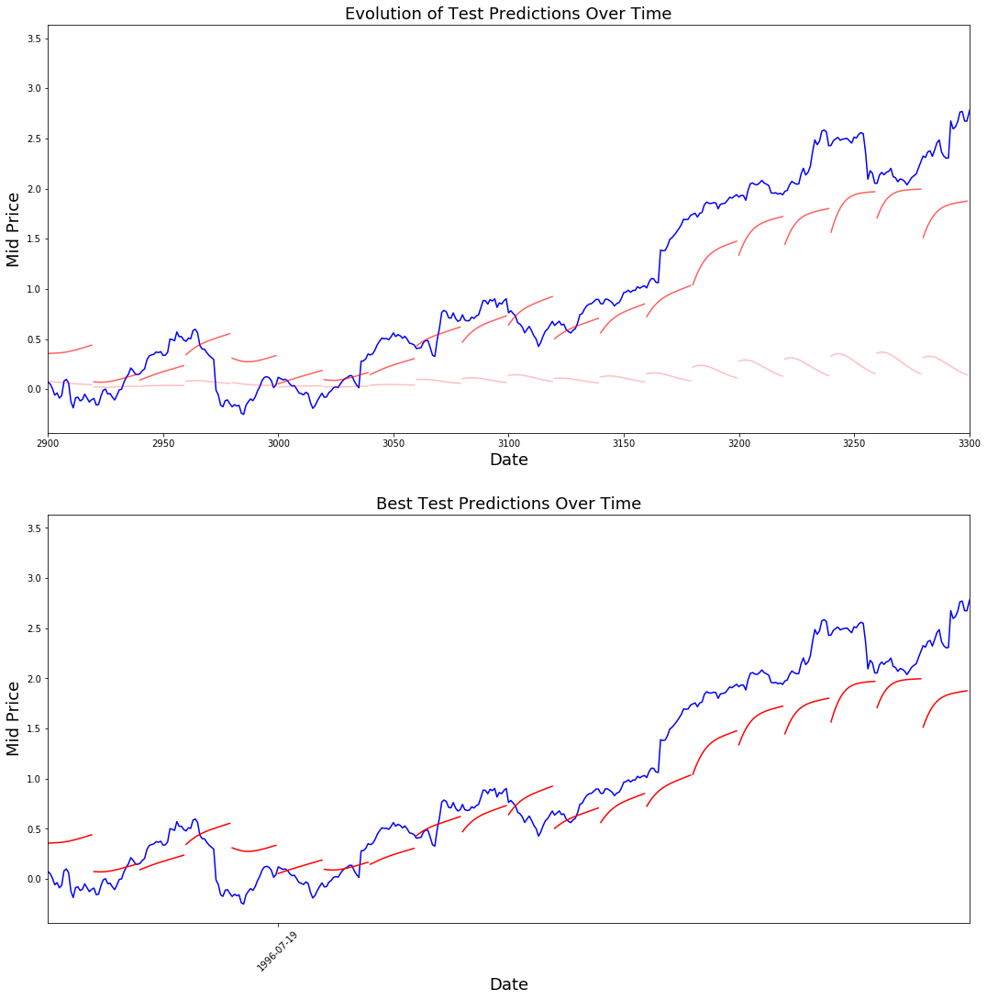

Education
Data Science, Machine Learning, Electrical Engineering . . .
Click to learn more!
Click to learn more!

Work
Management Consulting, Procurement and Supply Chain, Undergraduate Teaching Experience . . .
Click to learn more!
Click to learn more!

Projects
Machine Learning, Predictive Analysis, Object Oriented Programming . . .
Click to learn more!
Click to learn more!
Master of Science in Applied Computing
Data Science Concentration
I am currently pursuing my degree in applied computing, specializing in the Data Science Concentration. I plan to focus my studies in the area of machine learning with applications in business.
❮
❯
Scholarships and Awards
Vector Scholarship In Artificial Intelligence, 2021
The Vector Scholarship is awarded to top students in AI-related master’s programs in Ontario. These merit-based entrance awards recognize exceptional candidates pursuing a master’s program recognized by the Vector Institute or who are following an individualized study path that is demonstrably AI-focused.
MScAC Entry Scholarship, 2021
The MScAC program offers ~10 merit based entry scholarships to program applicants per year based on the quality of their application and interview.
Specailizations (1/2)
Data Science
In the MScAC program, I am apart of the Data Science Concentration which is a joint program between the departments of Computer Science and Statistics. I am passionate about using my formal training in data science to drive guided and intelligent decision making.
During my degree I will take Data Science Methods, Collaboration and Communications (STA2453), which is a project based course providing experience in real world statistical consulting. During this course I worked on projects involving applied data science, data scraping, data visualization and more.
I will also be taking Cloud-Based Data Analytics (MIE1628), where I will learn Cloud fundamentals and Big Data Analytics on Cloud-based platforms, including Azure, AWS, and google cloud platform.
During my degree I will take Data Science Methods, Collaboration and Communications (STA2453), which is a project based course providing experience in real world statistical consulting. During this course I worked on projects involving applied data science, data scraping, data visualization and more.
I will also be taking Cloud-Based Data Analytics (MIE1628), where I will learn Cloud fundamentals and Big Data Analytics on Cloud-based platforms, including Azure, AWS, and google cloud platform.
Human Computer Interaction
During my degree I took Topics in Multidisciplinary Human Computer Interaction (CSC2558). This course allowed me to study and experiment with designing and implementing self improving user interfacing systems, with an multidisciplinary team.
Specailizations (2/2)
Machine Learning
After being introduced to topics in machine learning during my undergraduate degree, I am very motivated to continue to learn and master these techniques during my graduate degree. During my internship I plan on leveraging these learnings to apply machine learning to real world business challenges.
I took Introduction to Machine Learning (CSC2515), to gain a deeper understanding of the classic machine learning algorithms and the math behind them. I also got hands on experience implementing many of these algorithms throughout the course
I will take Neural Networks and Deep Learning (CSC2516) to build upon my introductory knowledge of neural networks and study both the foundational ideas and recent advancements in neural net algorithms. This course will provide the technical foundation for me to apply these algorithms during my research internship.
I took Introduction to Machine Learning (CSC2515), to gain a deeper understanding of the classic machine learning algorithms and the math behind them. I also got hands on experience implementing many of these algorithms throughout the course
I will take Neural Networks and Deep Learning (CSC2516) to build upon my introductory knowledge of neural networks and study both the foundational ideas and recent advancements in neural net algorithms. This course will provide the technical foundation for me to apply these algorithms during my research internship.
Bachelor of Applied Science
Electrical Engineering
I completed my undergraduate degree in Electrical Engineering at Queen's University. My areas of focus included; Data Analytics, Machine learning, and Robotics.
❮
❯
Scholarships and Awards
Gold Medal in Electrical Engineering, 2019
The Gold Medal in Electrical Engineering is awarded to the graduating student who achieves the highest GPA in the Electrical Engineering Department
Thomas F. Lapierre Award, 2019
The Thomas F. Lapierre Award is awarded to the graduating student with the highest honours standing in the Department of Electrical and Computer Engineering
D.M. Jemmett Award, 2019
The D.M. Jemmett Award is awarded to the graduating student who achieves the highest average in Electrical Engineering courses of all years
3rd Place Prize in the Engineering Capstone Design Competition, 2019
This prize is awarded to the 3rd highest scoring team in the fourth year capstone design competition, scored by participating academic supervisors
The Ingenium Group/Joe Dominik Scholarship, 2018
The Ingenium Group/Joe Dominik Scholarship is awarded on the basis of academic excellence to a full-time electrical engineering student entering the third year of study
Dean’s Scholar, 2019, 2018, 2017, 2016
The Dean's Scholar is awarded to students who achieve a combined term GPA of 3.5 or higher while taking 16.1 units or higher
Queen’s University Excellence Scholarship, 2015
The Excellence Scholarship is awarded to incoming students who achieved an academic average of 90.0%-94.9% in their final year of high school
Extracurricular Experience (1/2)
QMIND (Queen’s Machine Intelligence and Neuroevolution Design), 2018-19
QMIND is an engineering design club at Queen’s University, made up of various teams of 4-5 students. Each team is tasked with researching and solving a project using Artificial Intelligence and Machine Learning.
I worked as a team lead, managing a design team of 4 multidisciplinary undergraduate students. My team’s objective was to research different machine learning methods and compare their ability to predict the long term price of a stock based on historical data. To learn more about this project and our solution, please click here.
As a leader in the QMIND design team, I also had the opportunity to present at the Canadian Undergraduate Conference on AI (CUCAI). This conference included an open house session for QMIND design teams to showcase their work. During this session, I presented and discussed my team’s research with the conference attendees and industry representatives.
I worked as a team lead, managing a design team of 4 multidisciplinary undergraduate students. My team’s objective was to research different machine learning methods and compare their ability to predict the long term price of a stock based on historical data. To learn more about this project and our solution, please click here.
As a leader in the QMIND design team, I also had the opportunity to present at the Canadian Undergraduate Conference on AI (CUCAI). This conference included an open house session for QMIND design teams to showcase their work. During this session, I presented and discussed my team’s research with the conference attendees and industry representatives.

Extracurricular Experience (2/2)
Engineering Society Orientation Week Leader (FREC), 2016
As a second year student, I mentored and led a group of ~30 new students through their Engineering Society orientation. I coordinated an engaging week of activities, teaching the new students about Queen’s Engineering and easing their transition into university.
Throughout the rest of the year, I maintained trusted relationships with the students by organizing unofficial events and establishing communication channels to ensure my students felt well supported throughout their first year at university.
Throughout the rest of the year, I maintained trusted relationships with the students by organizing unofficial events and establishing communication channels to ensure my students felt well supported throughout their first year at university.

Management Consulting
Procurement Transformations and Enterprise Applications
I have 2 years of experience working with clients from various industries including Financial Services, Public Sector, EUMI, and more, to streamline their procurement operations and achieve sustainable cost savings across their business. Click through the following slides to learn more about the clients and projects I worked on!
❮

 ❯
❯
Major Canadian Bank, 2020
Project Overview
The client was facing significant risk based on their lack of visibility and tracking of their contingient labour workforce. To solve this the client decided to implement SAP Fieldgalss, a leading Vendor Management system. This project also presented a great opportunity for the bank to got to market in order to consolidate their contingent labour supplier base to realize significant cost savings.
My Role
I analyzed the results of the client’s contingent labour Request for Proposal (RFP), which was sent to ~200 suppliers. Using a savings-based evaluation framework, I uncovered insights that drove the 3-round negotiation, ultimately leading to $20MM+ in annual savings.
As part of the bank’s SAP Fieldglass implementation, I developed a plan to transition ~2800 existing contractors to the platform and supported the design of the future sustainment organization which included the successful closure of ~20 audit gaps.
As part of the bank’s SAP Fieldglass implementation, I developed a plan to transition ~2800 existing contractors to the platform and supported the design of the future sustainment organization which included the successful closure of ~20 audit gaps.
Canadian Provincial Government, 2020
Project Overview
To modernize and streamline their back office processes this Canadian Provincial government was undertaking a full SAP implementation for their HR, finance, and supply chain functions.
My Role
I was responsible for leading the user acceptance testing of the Finance solution across the 17 ministries. I lead and coordinated the testing of 27 scripts over 12 sessions with >450 client participants. To achieve this, I worked closely with a team of 10 functional experts, holding them to deadlines, tracking progress, and providing support when needed. To ensure clear and up to date communication, I developed detailed progress tracking reports, that were ultimately adopted by the Project Management Office for all functional streams.
Canadian Retail Corporation, 2021
Project Overview
The client was undergoing a large HR and payroll business transformation, supported by implementing Workday, to modernize and streamline their HR technology.
My Role
I was responsible for converting the data in their legacy databases to the format required for inputting into the new system. I built >20 Alteryx workflows that pulled the relevant data from the database directly, manipulated and converted it to the correct format, and output the result in the provided Workday template. The workflows I built were able to be used multiple times, for the various testing phases, and at the official cutover from the legacy system to Workday. Using robust and tested workflows ensured a smooth and successful system go live.
North American Retail Auto and Glass Repair, 2021
Project Overview
This client’s procurement function was extremely decentralized with over 700 locations across North America. While undergoing a full Enterprise Resource Planning (ERP) technology implementation, the client realized their procurement function was not ready to adopt the new technology and gain the desired benefits.
My Role
I worked with the client to understand their current processes, key pain points, and future state goals. Working closely with the ERP technical experts I created 8 detailed process maps to standardize processes and improve efficiency. To supplement the process maps I developed corresponding RACI (Responsible, Accountable, Consulted, Informed) charts, which detailed the stockholders involved in each process and their specific role. Lastly, I analyzed the entire corporation’s historic spending data, and created an interactive dashboard to visually show top suppliers and spend by location, business group, and spend category. This analysis helped inform many key project decisions, including process steps, the supplier enablement strategy, and the technology configuration.
Canadian Public Sector, 2021
Project Overview
This client’s standard procurement process was extremely rigid and tedious. With an increase in complex and non-standard technical projects, the client realized they needed a more flexible and collaborative way to procure and evaluate supplier bids.
My Role
My team worked with the client to design specialized procurement processes to address their current challenges, through leveraging the agile methodology. As a certified Agile Scrum Master, I used my knowledge of agile methodology to come up with new and innovative ways of using agile in procurement processes.
I was responsible for developing a set of resources for procurement specialists across the organization to use as a support to deploying agile procurement initiatives. I developed a screening questionnaire to assess the eligibility for agile procurement, a comprehensive Agile Procurement playbook, and evaluation methodology.
I was responsible for developing a set of resources for procurement specialists across the organization to use as a support to deploying agile procurement initiatives. I developed a screening questionnaire to assess the eligibility for agile procurement, a comprehensive Agile Procurement playbook, and evaluation methodology.
Global LNG Operator, 2021
Project Overview
After a significant amount of growth, this client found themself being slowed down by inefficient and manual back office processes supported by siloed and unintegrated technologies.
My team was engaged to assess the client’s current state and future state goals across all functional areas, to ultimately produce a business case for implementing (or not implementing) SAP.
My Role
I prepared materials and facilitated 17 collaborative workshops across 5 process areas to identify key pain points and opportunities. I then developed the procurement and supply chain business case for implementing SAP, identifying a potential ~$5.4MM in savings associated with the proposed solution.
Teaching Assistant
Departement of Electrical and Computer Engineering
I assisted multiple professors in the department of Electrical and Computer Engineering facilitate various courses and laboratory sessions. Click through the following slides to learn more about the courses I led!
❮


 ❯
❯
Numerical Methods and Optimization (ELEC 273), 2019
Course Description:
This course offers a balance of theory and practice in numerical methods and optimization. Topics include numerical representations, error analysis, iteration, linear algebraic tools such a singular value and PLU decompositions, interpolation, curve-fitting, approximation, least squares, single and multivariable optimization, constraint optimization, integration, differentiation, and solving ordinary differential equations.
My Role
I hosted office hours for students to come in and ask questions. During these sessions I would help students understand concepts and work through difficult homework problems.
I also assisted students in their laboratory sessions, by reviewing their code and helping them debug. While working with students I would always have them first explain their approach and the fixes they had already attempted. I would then work with the students to pinpoint the mistake and then explain and discuss the underlying theory or syntax error, so that they would be able to fix the issue themselves and avoid encountering it again.
I also assisted students in their laboratory sessions, by reviewing their code and helping them debug. While working with students I would always have them first explain their approach and the fixes they had already attempted. I would then work with the students to pinpoint the mistake and then explain and discuss the underlying theory or syntax error, so that they would be able to fix the issue themselves and avoid encountering it again.
Electronics 1 (ELEC 252), 2019
Course Description:
This course is an introduction to semiconductor electronics. Topics studied include: operational amplifiers; dc and small signal models for diodes, basic principles of bipolar transistors and field effect transistors, dc analysis of electronic circuits and practical applications of the devices to the design of power supplies, amplifiers and digital logic circuits.
My Role
I assisted students in their laboratory sessions, helping them pinpoint their issues by walking them through various checks on their circuitboard. Once identified, I would work with the students to solve the issue by asking questions and discussing the underlying theories. I also worked with the professor to mark lab reports based on a standard matrix.
Microprocessor Interfacing and Embedded Systems (ELEC 371), 2018
Course Description:
This course provides an in-depth exploration of hardware/software interfacing for microprocessor-based systems, including microcontrollers, with the aim of imparting sufficient knowledge to enable students to design and implement systems of their own, particularly for embedded applications. The philosophy of the course is to progress from low-level internal interconnections and input/output interfaces, through software issues and interrupt processing, to high-level considerations for embedded and system-on-chip applications.
My Role
I assisted students in their laboratory sessions, by reviewing their code and helping them debug. While working with students I would always have them first explain their approach and the fixes they had attempted. I would then work with the students to pinpoint the mistake and then explain and discuss the underlying theory or syntax error, so that they would be able to fix the issue themselves and avoid encountering it again.
Electric Circuits (ELEC221), 2017
Course Description:
Electric circuit theory and electromagnetic theory are the two fundamental theories upon which all branches of electrical engineering are built, including computer engineering. Many branches of electrical engineering such as power, electric machines, control, electronics, communications, and instrumentation, are based on electric circuit theory. Therefore, the basic electric circuit theory is "the" foundation and starting point for what follows in electrical and computer engineering programs.
My Role
I assisted students in their laboratory sessions, helping them pinpoint their issues by walking them through various checks on their circuitboard. Once identified, I would work with the students to solve the issue by asking questions and discussing the underlying theories.


Technical Project Experience
Educational and Personal Projects
My favourite way to learn new skills and master concepts is to apply them to practical projects. I love to work on challenging and innovative projects, always pushing myself to continue to learn.
❮
Objective
❯
Detecting Senior Falls, 2018-19
Objective
For my fourth year capstone project, my team’s objective was to develop a deep learning neural network that could predict human falls based off of live smart phone data, collected from the phone's internal accelerometer and gyroscope.
Solution
My team developed a deep learning algorithm that produced an ~83% accuracy on data collected live during the demo. During development, the model produced ~90% accuracy on an unseen segment of the training data. The confusion matrix shown to the right, visually displays these final results during development.
My role within the team was the Data and Integrations Lead, responsible for managing and executing all aspects of the project related to the data and user interface. I researched and identified a dataset of 600 samples, which was used to train the model. To validate the usability of the data for the project, I designed a machine learning program, using the TensorFlow library in python, which produced a 99% prediction accuracy. I also designed the user interface which captured the data from the phone, fed it through the network, and produced a result in real time.
Click here to see a video of our teams final presentation.
My role within the team was the Data and Integrations Lead, responsible for managing and executing all aspects of the project related to the data and user interface. I researched and identified a dataset of 600 samples, which was used to train the model. To validate the usability of the data for the project, I designed a machine learning program, using the TensorFlow library in python, which produced a 99% prediction accuracy. I also designed the user interface which captured the data from the phone, fed it through the network, and produced a result in real time.
Click here to see a video of our teams final presentation.

Future Predictions for Financial Markets, 2018-19
Objective
As a team lead for the QMIND design team, I led a team of students through an extracurricular machine learning research project. Click here to learn more about my experience in QMIND.
My team’s objective was to research different machine learning methods and compare their ability to predict the long term price of a stock based on historical data.
My team’s objective was to research different machine learning methods and compare their ability to predict the long term price of a stock based on historical data.
Solution
The team worked in two sub teams. The first was responsible for web scraping and consolidating the historical stock price data from public websites. The second sub-team worked on finding open source machine learning algorithms in python and modifying them to achieve our objective.
Through experimenting with various algorithms, the team concluded that the long short-term memory (LSTM) neural network produced the most accurate predictions. This algorithm worked well because it considered all historic data, while prioritizing the most recent data samples. The graph displayed here, shows the actual stock market price fluctuations for the Google stock (blue), versus our LSTM model’s predicted future prices (red).
While our research produced meaningful results, it is important to understand the limitations of our project. In order to continue to enhance our model, it would be important to consider other key market indicators, other than just the past stock prices.
Through experimenting with various algorithms, the team concluded that the long short-term memory (LSTM) neural network produced the most accurate predictions. This algorithm worked well because it considered all historic data, while prioritizing the most recent data samples. The graph displayed here, shows the actual stock market price fluctuations for the Google stock (blue), versus our LSTM model’s predicted future prices (red).
While our research produced meaningful results, it is important to understand the limitations of our project. In order to continue to enhance our model, it would be important to consider other key market indicators, other than just the past stock prices.

Customer Data Analytics, 2018
Objective
The course project for my fourth year Data Analytics course, required me to analyze a large (7000+ entries) dataset of mock customer data for an Internet Service Provider, to identify reasons customers were leaving.
Solution
I cleaned and analyzed this data using KNIME, a data analytics platform. I analyzed the various customer attributes to determine the most significant attributes to consider, using techniques including statistics and correlation. Once I understood the attributes that most significantly correlated to customers leaving, I was able to apply more advanced prediction algorithms to this subset of the attributes. These algorithms included both supervised (decision tree, random forest, multilayer perceptron) and unsupervised (clustering) learning techniques. For the supervised learning algorithms I was able to achieve ~85% prediction accuracy, which validated the final conclusions I made as to why customers were leaving the company.
Hotel Reservation System, 2018
Objective
While studying at the Nanyang Technological University in Singapore, I completed a course project for Object Oriented Programming (OOP). The objective of this project was to develop a comprehensive hotel reservation system using OOP in Java.
Solution
My team developed a system with check in and out functions for various room sizes, and tracked information such as room occupancy, guest lists, and invoices. During this project I was responsible for developing the main program that called all other aspects of the code developed by the rest of the team. I also developed the full UML diagram which kept the entire team aligned on the various classes and methods and how they all interacted.